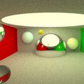
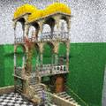
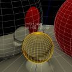
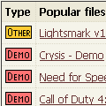
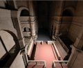
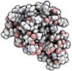

|
Realtime Radiosity, global illumination technique
that achieves its fantastic speed (typically order of magnitude higher than other GI techniques)
by transporting light between actual scene triangles, rather than between additional artificial
structures (voxels etc), thus minimizing overhead.
Suitable for rasterizers, all local illumination models, light types, materials, shaders, graphics APIs.
Optimal for indoor games and real-time visualizations with fully dynamic lights.
RealtimeRadiosity.com, Stepan's realtime radiosity, global illumination and rendering blag
|
[ NEWS ] [ DEMOS ] [ TECHNIQUES ] [ PEOPLE ]
Lightsmark and
Lighsprint SDK are now free and open source software.
After decade of silence, I plan to have some fun, so I'm resurrecting old projects.
There are tons of news and demos missing here.
Luckily this website (actually all of my projects) is on
github, so feel free to send pull requests.
I just updated list with several new
demos, Voxel cone tracing, Sfera and Apollo 11.
Unfortunately I was not able to run the most recent one, Apollo 11, as none of my GPUs is supported.
Thanks Yann Yeo for Voxel cone tracing link, thanks Redox for several earlier links.
OpenCL 1.2
was released, news behind link (no paradigm shifts today).
OpenACC
is a new API trying to find implementers.
The problem with OpenMP is that current specification does not
manage memory, therefore implementations don't know what regions of memory
need to be available in case of running code on GPU.
And they need to know, accessing CPU memory from GPU over PCIe is too
slow, even with 2x faster PCIe 3.0 devices coming in a month or two.
Solution:
members of OpenMP Working Group on Accelerators did theirs job
and extended OpenMP for use on GPUs, by adding necessary pragmas,
e.g. for explicit copying of data between CPU and GPU memory.
To be accurate, this initial release did not extend OpenMP.
Instead, only GPU specific pragmas were specified in a new separated API
called OpenACC. If it works well,
we might see these pragmas merged into future version of OpenMP.
Still, there will be fight with Microsoft. As the most influential
compiler developer, Microsoft uses its near monopoly position to promote
proprietary APIs as a way to lock customers in. Right now, Microsoft
pushes competing API, C++ AMP,
and tries to help it by not supporting OpenMP
(ok, by supporting 9 years old version 2.0).
Although both OpenACC or C++ AMP APIs look well and I wish them support
from GPU vendors, I did not see any implementations yet.
What we have and what works best today is OpenCL for GPUs, OpenMP for CPUs
and CUDA for confused developers.
Wow,
interactive pathtracing in browser, instantly added to demos.
User interface makes scene completely dynamic.
Each time you change geometry, light or material, javascript hardcodes everything into new glsl shader and runs it.

My wish from
3 years ago
> Scenes are made of roughly 10 spheres. It makes me wonder in good sense,
> we coders love limits and intros show we can do lots in 256 bytes...
> can we make good gameplay with renderer limited to 10 spheres?
> I guess building games on Thierry's commented source code would be piece
> of cake. Any demo organizer here?
was nearly satisfied in
The once known as Pong project, set of realtime pathtraced nearly minigames made of
10 spheres (or slightly more).
It still requires recent Nvidia GPU.
It's "nearly" because although user can control e.g. car made of several spheres, and shoot spheres, and there is sphere physics, there is still no game logic.
Few months ago, Jacco Bikker made small cute realtime path traced demo
Simplex Paternitas (Windows binary, recent Nvidia GPUs only).
It was for demoparty iGathering 2011 with competition theme "parenting",
so at the beginning, you can see two characters (made of few spheres) making love... oh, they do it behind closed doors (sphere),
where can I control transparency?
Should I add it to demos? There already is Brigade, one year older realtime pathtracer by Jacco, with more complex scenes.
Two more voices for papers with source code (but still no idea how to accomplish that, other than crying loud and trying to build momentum):
Guido van Rossum started it
> But if you want to be taken seriously as a researcher, you should
> publish your code! Without publication of your *code* research in your
> area cannot be reproduced by others, so it is not science.
In discussion below, daglwn added
> > Indeed, scientifically, it's *preferable* that the results be validated from *scratch*,
> > to avoid risk of "contaminating" recreations with any mistakes made in the original experiment.
>
> Ideally, perhaps, but we do not live in a world of ideals. In the world of reality researchers
> often do not have the time to reproduce the code, in which case the publication goes without
> challenge (this is the most frequent outcome in the computing field). Other times the researcers
> will want to reproduce the code but cannot due to lack of documentation. A really ambitious
> researcher may spend a ton of time figuring out assumptions and discovering major flaws
> in the previous work, none of which can be published (in the computing field) because
> no conference will accept papers that do not show "improvement."
>
> In the computing field, that last point is the Charybdis to the Scylla of unstated assumptions
> and privately-held code. Either one is grounds to seriously question the validity
> of our research methods, and therefore results, in computing.
>
> I once talked to a few higher-ups at IBM research. They flat out stated that they will
> not accept any computing publication as true until they verify it themselves and they find that
> 99% of it is worthless either because it cannot be reproduced or the papers are flat-out lies.
OpenGL 4.2
brings bunch of new features, even for older hardware, with nearly immediate support from AMD and Nvidia. Highly appreciated.
OpenMP 3.1
also brings bunch of new features, with support in upcoming gcc 4.7. Appreciated, but complicated to use until adoption improves, Microsoft still supports only 2.0.
There's risk Microsoft will never go to 3.x as OpenMP slowly loses importance - it was designed for systems with single address space, it does not know what
memory regions are accessed, therefore it can't move code execution to GPU (it does not know what memory regions and when to copy between CPU and GPU).
It's great for systems with single address space,
and although research projects exist for extending it to GPUs with separated address space in future versions, it's probably too much hassle, I don't expect success.
Cilk Plus
is Intel's new parallelization tech (Intel acquired it by purchasing Cilk Arts), ported to upcoming gcc 4.7.
What they didn't say in presentation is that it's similar to OpenMP in capabilities, but less powerfull and less supported than OpenMP, it would be crazy to start using it.
C++ AMP
is Microsoft's new parallelization tech, with only promised support so far, but with potential, as it targets GPUs from the beginning.
Like OpenCL, it explicitly manages memory and transfers between CPU and GPU address spaces, and it restricts parallel code to not use recusrsion, library functions etc.
With C++ lambdas, it's even more nice and compact than OpenCL and CUDA code, it's win in design.
The only problem - it's designed to lock you into Microsoft platform, like CUDA is designed to lock you into Nvidia platform, so it can't replace multiplatform OpenCL.
3d artist Amos Dudley asked me about slow progress in architectural visualization
> I just wanted to know if you know of some realtime, or even
> semi-realtime solution that would work better than the current
> non-realtime model, that exists or will exist soon? From the demos on
> your page (lightsmark, Interactive illumination using voxel cone
> tracing, etc), the technology looks fairly mature- it just confuses me
> why it doesn't seem to be readily offered on the market.
Good question, let me answer here.
There are many excellent ideas and papers, but only one in ten techniques makes it into executable demo so that people can actually see it, and then only one in ten demos makes it into product,
so that people can actually use it.
Turning idea or paper into demo requires significant effort, there is not enough space in paper for all important details, implementer needs to be as clever as researcher who wrote the paper.
In the end, implementer can discover problems that were not evident from the paper and throw whole work away.
Still, it is fun, so many try it and we see at least few new demos every year.
Of course, paper authors have working 'demos', but existing journal and grant system does not require them, so no one releases them.
(It's difficult to setup efficient grant system, I can't say I would do it better, researchers already do miracles for minimal wages.
Still, demos would increase chances of new tech getting into production, which is one of motivations behind grants.)
Turning demo into product needs huge effort too.
First demos tend to show single data set that works on single GPU. Product needs all corner cases working on diverse hardware, reaching such maturity can take years.
Secondary problem is that demo written only to demonstrate something, or research code written for testing new ideas, can't be integrated into product.
One has to write new code from scratch to make it as flexible and easy to use as pieces of lego, to adapt it for production.
Such rewrite is not terribly difficult for experienced skilled programmer, but writing something again, from scratch, without adding new features is no longer fun, not many do it.
Then there are slightly inflated expectations, as several companies already use realtime GI for marketing,
although closer inspection shows that actual products still use static lightmaps.
Although realtime GI spreads slowly due to obstacles I just described, some visualization products already made it to end users.
Realtime pathtracing is the most often demonstrated tech, I think some plugins already exist,
it's only too slow/noisy for presenting architecture to end users.
Then there is RenderLights, probably first noise-free realtime GI product on market
(video of RL 1 year ago, it's quite more advanced now).
I did not mention RL earlier because it's based on my code.
Several other visualization companies licensed my code, as far as I know they did not release yet.
There may be other products I don't know of, let me know anyone if you know.
So it's not much, but it's getting better.
High Performance Graphics 2011 paper
Real-Time Diffuse Global Illumination Using Radiance Hints
(
paper,
video,
video)
calculates diffuse lighting in a grid in fully dynamic scene, like Light Propagation Volumes.
Unlike LPV, it has grid spanning whole scene, and it does not inject occluders into the grid, instead
it relies on incomplete occlusion information present in reflective shadow maps.
So it suffers from low resolution/missing details, this can be improved by adding SSAO.
And from incomplete occlusion; this is something patient game designers can possibly workaround with extra scene tweaking,
but non game users have no way of fighting it. As usual, this problem would be easier to evaluate with demo.
Eurographics 2011 paper
Guided Image Filtering for Interactive High-quality Global Illumination
(
paper)
kills some pathtracing noise by blurring indirect illumination less across geometry edges (found in normal+depth map).
As a proper pathtracing paper, it starts motivation by poking into rasterization:
"Code complexity increases tremendously for systems that simulate global illumination effects using rasterization because multiple approximations need to be combined to achieve a sufficient visual quality."
Hmm, I use rasterization and I don't filter indirect illumination across geometry edges since 2005.
But I won't poke back into pathtracing, guys already suffer enough by waiting for their renders to complete ;)
Still, I would like to see this demonstrated in Sponza (i.e. no caustics, guided filter destroys them),
it could produce noiseless interactive pathtracing
even faster than in Brigade ERPT video. For interactive use, this could soon become practical.
Upcoming Siggraph 2011 paper
Interactive Indirect Illumination Using Voxel Cone Tracing
(
short paper,
poster,
video,
author's blog)
looks even better.
Similarly to Voxel-based Global Illumination,
it calculates indirect illumination in prebuilt voxel hierarchy, dynamically updated;
works with fully dynamic geometry and lighting; but it supports both diffuse and specular reflections.
It also intersects voxels instead of triangle meshes,
but it gets extra speed by approximating visibility in cone using single ray.
As usual, any comparison is difficult without demo, but the video looks promising.
i3D 2011 paper
Voxel-based Global Illumination
(
paper,
video)
calculates near field illumination in prebuilt voxel hierarchy, dynamically updated;
works with fully dynamic geometry and lighting, only diffuse reflections.
Speed comes from intersecting secondary rays with voxels instead of triangle meshes.
And from traversing only limited distance (near field radius), ignoring indirect light from greater distance.
There seems to be no transparency compensation in mostly empty voxels, tiny objects create darker indirect shadows, as if they fully occupy voxels.
Paper mentions using it for multi-bounce indirect illumination at reduced performance.
Embree - Photo-Realistic Ray Tracing Kernels is open source CPU pathtracer released one week ago by Intel.
Interactive renderer works well, but as other plain pathtracing renderers, it is slow/noisy.
It is slower than comparable GPU pathtracers on comparably expensive hardware.
Intel claims that Intel Compiler improves performance by approx 10% (compared to Visual Studio or gcc). Although I did not test Intel Compiler, 10% is believable for included trivial scenes;
it is hard to believe for complex scenes typically bottlenecked by memory access, something that can't be solved by compiler.
Maybe that's why included scenes are so small, Cornell box the most complex one.
For testing complex scenes, package includes .obj importer, however it is bit difficult to work with, noise is sometimes too much. (Also, what I did not find documented:
Emittance is ignored, emissive triangles have to be specified from commandline, with full coordinates. Textures have to be in .ppm.
"Error: file format not supported" sometimes means "your filename contains space, lol".)
KlayGE (open source game engine) was announced yesterday with "realtime GI" inside.
I did not look at source code, but lighting in GlobalIllumination sample
looks very wrong, indirect illumination is concentrated in small part of scene
and completely missing in the rest. It does not even look like first bounce. (Edit: documentation says it's Splatting Indirect Illumination.)
Missing indirect illumination is masked by good old ugly constant ambient.
Some other non-GI samples are very nice and it's good to see how open source engines improve, but
in this version, "realtime gi" part is not yet working well.
Anton Kaplanyan/Crytek published this realtime GI technique in 2009-08 (Siggraph).
As far as I know, they did not release any demo or game with it.
(I've seen 20 minutes of Crysis 2 video footage,
but there was no realtime GI visible, can anyone explain where should I look for it?)
Lee Salzman published his open source LPV implementation
(source and linux+windows executables)
probably in 2009-09 (according to date attribute of files).
I'm not adding it to demos, because I don't see it working,
demo runs strangely lit, without expected GI effects when spheres move.
Andreas Kirsch published his open source LPV implementation
(page, source and windows executable)
in 2010-07.
It seems to work in fixed region, majority of scene stays completely black,
and light and objects can't be moved, so it's not easy to test it,
but those few colums in center of scene have expected indirect illumination.
OpenGL 4.1 just released. Good news inside.
Aside from OpenGL, I just bought several new GPUs for tests,
so next time some confused developer uses CUDA instead of OpenCL,
I'll come with better screenshots, I promise.

Jacco Bikker released
Brigade, next gen Arauna, with optional GPU path.
Unlike e.g. Lightsmark that splits work between CPU and GPU by work type (direct illumination is faster rasterized on GPU, incoherent indirect rays are faster on CPU),
Brigade uses both CPU and GPU for the same task and balances load to keep both busy.
Technique is pathtracing, so it's too slow for games (way slower than any engine with direct illumination rasterized), but it also makes it very simple, source code is short.
As a sideeffect, it can run without GPU.
It uses proprietary CUDA instead of OpenCL, so it can't use majority of GPUs.
Multi-Image Based Photon Tracing for Interactive Global Illumination of Dynamic Scenes
describes realtime GI technique for DX9 generation GPUs.
Performance numbers look well, considering it's fully dynamic and with caustics, but it's too slow for games.
It's good for hipoly scenes as it calculates intersections in depthmaps only, no KD trees.
It's not good for complex architecture, it would need too many depthmaps to represent whole scene.
Motivation
Linus Torvalds is funny when talking crap about C++. I don't think he's so stupid to not see advantages of C++,
he just aggressively needs to keep kernel complexity down, and sticking with simpler tools might slow complexity creep down.
But complexity endangers also smaller projects, simply adding features to your pet project over long enough period of time makes it leading middleware solution,
but also harder to understand for others.
So it's important to permanently watch complexity creep and sometimes even avoid useful tools, like Linus does with C++.
For years, I resisted temptation to count references. It brings certain complexity that can be avoided in my case, I thought.
Sticking with simple rule "owner creates and deletes, ownership is never passed" made internals difficult, but API for users stayed clean and transparent.
My comments filled up with "this would be easier with refcounting".
One day, I gave up, it was clear I have to count references and let users count too.
The question was, how to do it with minimal impact on API complexity (future users), and ideally also with minimal impact on existing users.
And of course without sacrificing performance.
Here comes my solution.
Purpose of this post is to publish it, tell world it works. I was not able to google this trick anywhere else,
so I was nervous, will it work? Yes, it rocks!
API
virtual C* createReference();
This single member function makes class C refcounted, without breaking old apps, without breaking simple general rule that every object has its owner who creates and deletes it by plain old "delete".
Users may look at createReference() as if it creates full copy, but in fact, it increments internal refcount and returns "this".
Trick is in destructors and operator delete. We can't stop compiler from calling them, but implementation is ours, we can check refcount and destruct member variables only if it is 0.
Some class psychologists might talk about destructor abuse, so keep implementation in closet to avoid arrest, expose only nice createReference(), users will love you and your middleware will dominate.
Implementation
This is the most simple ninja-refcounted class. To make your class ninja-refcounted, merge it with Ninja (copy functions to your class or your functions to Ninja), it doesn't work by subclassing.
For sake of simplicity and performance, refCount manipulation is not locked, you should not createReference() and delete the same instance from multiple threads at the same time.
static void* g_classHeader;
class Ninja
{
public:
//! First in instance lifetime.
void* operator new(size_t n)
{
return malloc(n);
};
//! Second in instance lifetime.
Ninja()
{
refCount = 1;
}
//! When deleting an instance, this is called first.
virtual ~Ninja()
{
if (--refCount)
{
// backup class header, we are going to die temporarily
g_classHeader = *(void**)this;
return;
}
// destruct members as in your usual destructor
}
//! When deleting an instance, this is called last.
void operator delete(void* p, size_t n)
{
if (p)
{
Ninja* n = (Ninja*)p;
if (n->refCount)
{
// resurrect instance after destructor
*(void**)n = g_classHeader;
}
else
{
// delete instance after destructor
free(p);
}
}
};
//! Creates new reference to this. Both pointers must be deleted (in any order).
//
//! It is not thread safe, must not be called concurrently for one buffer.
//! It may be called concurrently for different buffers.
virtual Ninja* createReference()
{
if (this)
refCount++;
return this;
}
private:
volatile unsigned refCount;
};
Example use case
After making
class Image ninja-refcounted, it takes only few lines to make
Image* loadImage(filename)
detect when the same filename is used again and return new reference to the same image.
User code is not affected, memory saved, load time reduced. No other refcounting technique makes this possible.
Pros
More efficient than smart pointers (no additional allocations, no additional indirection, in this case also no locks, simply no overhead).
It does not affect work with objects (new, delete), old code runs with refcounted objects unmodified. I.e. refcounting is invisible, ideal for ninjas.
It does not create any new types, old types become refcounted.
Cons
You must be able to not destruct member variables in destructor, types with automatic destruction can't be used.
Very intrusive, the same code must be implemented in every refcounted class, it can't be implemented once and reused.
OpenGL 4.0
is out, with two new shader stages for tessellation, like D3D 11.
Is this page dead? Definitely not, but not much happened in RTGI.
~~~
OpenCL develops nicely.
~~~
Startups come up with new big words.
~~~
No stronger game consoles on horizon, this is real blocker for widespread RTGI use.
~~~
GPU makers play their usual games; while Intel
says that people don't need high performance graphics,
and Nvidia with uncompetitive hw says "demand is high",
current leader AMD/ATI plays extremely respectably, it totally makes me forget
pain of buggy drivers several years ago.
~~~
Introversion released
Darwinia+,
that's game I wrote graphics effects for, several years ago.
I hope guys make enough money for staying independent, reviews are great.

See new item in
demos, another SmallPT port to GPU, this time in OpenCL.
Sometimes better 2d compression makes better global illumination,
like in
old Broncs demos
with adaptively subdivided scene and
quantized vertex irradiances saved to jpg (num.vertices * num.frames).
Of course GI quality sucked, but it was part of joke,
people believed it's realtime computed.
Complete dynamic scene GI was brutally crammed into a few kilobytes
thanks to fresh new libjpeg 6b (by Thomas G. Lane).
Years passed and 2d compression gurus did not sleep.
And although fractal compression did not make revolution we expected,
wavelets went nearly mainstream
in jpeg2000. Nearly mainstream, because despite wide support in software
and 1.2x better compression, people still store data in jpeg, using libjpeg 6.
This summer, Guido Vollbeding released libjpeg 7. 11 years after v6.
First thing I noticed in readme was shocking broncs-like
FILE FORMAT WARS: The ISO JPEG standards committee actually promotes different
formats like JPEG-2000 or JPEG-XR which are incompatible with original DCT-based
JPEG and which are based on faulty technologies. IJG therefore does not and
will not support such momentary mistakes
and then
v7 is basically just a necessary interim release, paving the way for a
major breakthrough in image coding technology with the next v8 package
which is scheduled for release in the year 2010.
Ha! I want to know more, how will that v8 work?
Friend google quickly found forum post from 2004 that shows
Guido badmouthing jpeg2000 and promising
revolution in jpg. cpoc commented I like how the guy always raises
the unknown-secret mega property of DCT that trumps everything... so
no one can argument.
Few years later, Guido
revealed his secret (pdf).
If you need more proof the guy's crazy, see the last page, figure B-1.
However, if you really read the pdf, he does good work and v8 may greatly
improve progressive jpg, improve compression in low quality settings
and lossless compresion. Let's wait for v8.
Or not wait?
Guido did not provide jpg compression improvement numbers and I think it
won't be enough to catch jpeg2000.
Jpeg2000 is already here and it's 1.2x better than jpg.
Current state of the art,
DLI,
is 1.6x better than jpg. It's very slow, but few months back, Dennis Lee
added "fast" mode that's fast enough for practical use, with only slightly
worse compression, still much better than jpeg2000.
I think dli could do what jpeg2000 did not, seriously kick jpg ass.
But Dennis Lee would have to open source it.
Light Propagation Volumes in CryEngine 3 (video)
- Excellent, looks like practical for hard-boiled game devs.
It's mix of several techniques, so devs may be sad it's
complicated to implement, but it's reality of extreme optimizations.
Note that it's optimized for good look, correctness is sacrificed
for speed (only one bounce etc).
Hardware-Accelerated Global Illumination by Image Space Photon Mapping
- Faster photon mapping, but not fast enough for game devs.
An Efficient GPU-based Approach for Interactive Global Illumination (video)
- Faster raytracing, but not fast enough for game devs.
Update 2009-08-28:
Micro-Rendering for Scalable, Parallel Final Gathering
- Very interesting for novelty, not yet fast enough for realtime
or good enough for offline production.
Static micro-rendering has similar asymptotical time complexity
to static KD tree raytracing,
however micro-rendering works with point hierarchy that is easier
to update in dynamic scenes (in O(n)).
Micro-rendering seems to be faster also in absolute numbers.
AMD made
ATI Stream SDK beta with OpenCL on CPU freely available.
This makes OpenCL development available also for unregistered developers.
It's still only for early adopters as it's CPU only.
Remaining problem: No vendor supports OpenCL-OpenGL interoperability.
Without fast switch to OpenGL, it's useless for hybrid rendering.
DX11 + compute shaders will probably come sooner than working OpenCL+OpenGL.
Until vendors fix the problem, OpenCL and DX11 won't compete, they will
cover different markets, OpenCL for GPGPU, DX11 for hybrid rendering.
Update: OpenCL GPU driver developed by Apple should be present in just released OSX 10.6.
I didn't have time to test it yet, but if it's true, it's first publicly available OpenCL GPU driver.
Others report it doesn't support any extensions. It would mean no OpenGL interoperability.
Last year, Cass Everitt opened interesting discussion how to do
next-gen graphics on top of OpenCL.
I found it now, but it's still interesting reading.
And it reminds me, I predicted
OpenGL death by OpenCL
in 25 years. 24 years to go.
On unrelated note, this is truly web 2.0,
now with all post titles linking to itself.
I considered going even further, but this single static html file design already
scales fantastically. See how bandwidth grows exponentially (go internets go)
while page size grows linearly (I'm not robots).
Nvidia sent new OpenCL driver for conformance tests and made it available
to registered developers.
Two missing features still stop me from writing OpenCL code
(damn, it says that my experience must not be discussed),
but our future is bright, with many light bounces.
Update: AMD drivers are also already available to selected developers.
AMD expects public release in
"second half of 2009".
Update 2009-05-28: Another closed beta release from Nvidia. It's good, one of two features I miss was added.
Many years ago,
MinGW was the best gratis C++ compiler for Windows. Everyone supported it.
Then
gcc 4.0 brought big changes that broke Windows port and at the same time, Microsoft started
releasing Visual C++ gratis. One day we will wake, all base belongs to Microsoft and all functions have _safe suffix.
Then MinGW will rise again and save Windows coders from submission. But for now, Visual C++ works great and incentives for supporting MinGW shrink.
Fading away is slow process, I don't know any open source library that dropped MinGW support,
but new open source libraries appear with Visual C++ and without MinGW support.
As a library user, I don't consider writing and submitting makefile for MinGW platform a big deal,
but doing it for several libraries is exhausting.
It's high time to start reverting the trend.
Here comes
TDM gcc 4.4, MinGW based Windows build of fresh new gcc 4.4.
TDM maintains Windows patches and provides binary builds for several years, so this is just another release,
but what makes it stand out - it's bleeding edge 10 days old gcc release and list of known bugs is extremely short.
For me, it was never better time to start supporting "MinGW" again.
Two good news from Nvidia:
1. Beta drivers 185.81 support new OpenGL extensions that add pointer arithmetic to GLSL shaders,
and GL functions that make it possible to send data to GPU in bigger batches,
so that simple use of pointer in GLSL saves lots of CPU work.
All G80 and newer GPUs are supported.
Details in
OpenGL.org thread.
IMHO as a core standard, it would be big game changer,
complex algorithms that wait for OpenCL would suddenly be possible in GLSL.
But it's too late, before AMD adopts this handy NV extension, OpenCL will be here.
2. In fact, OpenCL is here, first Nvidia pre-beta OpenCL drivers are available on request,
apply here.
Jacco Bikker posted new
Arauna GI
demo at gamedev.net.
It's not really dynamic as you can't move lights, GI precalculation takes 8 seconds on my 4 cores.
But still good to see this development, it's only matter of time
before Jacco or one of his students calls GI update in every frame and starts
tweaking quality to make it interactive.
Go go!
OpenGL 3.1
says
I'm new,
specification and beta drivers were released today.
Spec size of cleaned up API dropped from 3MB to 2MB.
I can't enjoy 3.1 at the moment, as removing all references to removed functions
would cost me at least two unproductive weeks, but cleaned up spec is great for coders who start from scratch.
Michael Larabel
comments release with
In regards to OpenCL, Khronos also let loose that OpenCL implementations should begin appearing quite soon.
Update: Must.. resist.. temptation.. rewrite.. everything.. for.. 3.1.
I'm weak, already rewriting.
Zack Rusin blogs about
free OpenCL implementation in Gallium3D
(OpenCL is perfect layer between realtime radiosity and hardware,
Gallium3D is a new 3D driver architecture recently
merged to Mesa trunk).
Zack's wish to have OpenCL supported on first GPU
platform by summer 2009 looks wildly optimistic, however,
as a Gallium3D developer who attended at least one OpenCL working group meeting,
he is qualified to make such estimate. Thanks, Zack.

Usually I don't blag about adding new item to the
list of demos, but this time
it's different, because I haven't added anything new for nearly 1.5 years.
What happened with realtime GI freaks?
Arauna evolved,
but I think Arauna based games did not bring anything significantly new over already listed Arauna demo.
Lightsmark 2008 greatly improved speed and quality over 2007, but somehow I didn't feel it deserves new item in the list.
Geometric algebra guys still taint good algebra's name by producing marketing materials only.
So what's new?
First, there was smallPT,
GI in 99 lines of C++, fantastic piece of code that renders Cornell box like scene made only of spheres.
It's very slow, but Thierry Berger-Perrin ported it to CUDA and added new scenes and controls for realtime manipulation,
The Once Known as SmallPT was born.
Magnificent. Beware, requires Nvidia card. Source code included.
Scenes are made of roughly 10 spheres. It makes me wonder in good sense, we coders love limits and intros show we can do lots in 256 bytes...
can we make good gameplay with renderer limited to 10 spheres? I guess building games on Thierry's commented source code would be piece of cake.
Any demo organizer here?
It would be cool to have single interchange data format for 3d scenes.
There's need for such format and there's nothing better than
Collada,
so it's sad that Collada support is not granted everywhere yet.
We have none or very weak native support in the biggest game engines
and 3d content creation tools.
However, it's growing from bottom up, with
native support in smaller products and 3rdparty plugins into the big ones.
Recent good news is
huge speedup
of new collada max/maya import/export plugins.
It's December and
OpenCL specification is out.
Let's make some advanced realtime stuff that runs everywhere...oh wait, where's platform runtime?
Update: this slide at hardware.fr shows Nvidia plan: final runtime/driver is expected in the middle of 2009.
From
full article:
Version 1.0 of OpenCL is currently scheduled to be released in early December at SIGGRAPH Asia 2008 in Singapore.
The presence of IBM and Intel in the OpenCL working group suggests that implementations for Cell and Larrabee, respectively, are in the works.
BTW, Khronos promised quick release also for OpenGL 3.0,
then it took huge delay. I don't expect huge delay this time as it's
1.0 without burden of backwards compatibility.
See
Imperfect Shadow Maps for Efficient Computation of Indirect Illumination (pdf).
Instant Radiosity was improved by rendering random surface points into
shadowmaps, it's faster than rendering triangles.
Paper doesn't show scaling, their 'complex' scenes are pretty medium,
but I think it works and we will see it in a game in less than 10 years
- if we survive all those ninja paradigm shifters throwing raytraced donuts.
Gamefest 2008 presentations
are online.
Shedding (Indirect) Light on Global Illumination for Games
sounds interesting, however slides are not available in any standard
format, only .pptx. OpenOffice 2.4 doesn't support it.
PowerPoint Viewer 2007 fails.
PowerPoint Viewer 2007 SP1 was expected to fix it, but it fails too.
There's no free viewer capable of opening it...... so point of my story is:
proprietary formats are baaad, mkay?
Nuts, the point is that years of hardening by graphics driver bugs made
me imunne.
I opened .pptx file in FAR, found it's just zip archive
with lots of xml jpeg and one xlsx file.
Ha, is xslx excel stuff? I installed Excel Viewer 2007 and suddenly,
Powerpoint Viewer 2007 SP1 smoothly opened the presentation.
I reported it to MS, but before fix is available
(and before OpenOffice releases 3.0 with .pptx support),
users will google for solution. Let's attract them.
Viewer says PowerPoint Viewer cannot open the file "Shedding Indirect Light on Global Illumination for Games.pptx"..
Error in event log is Faulting application PPCNVCOM.EXE, version 12.0.6211.1000, time stamp 0x46ce621f, faulting module oartconv.dll, version 12.0.6214.1000, time stamp 0x47029c72, exception code 0xc0000005, fault offset 0x0022d94b, process id 0x3b78, application start time 0x01c912bcf5abd300.
See
Bouliiii's CUDA raytracer (source code).
Lighting is simple, direct rays only, but speed is promising,
12-40Mrays/s on 8800GT.
Of course, raytracing direct light is much slower than rasterizing it,
but it's good excersise before going to indirect lighting where
those rays would really help. So is 12-40Mrays/s practical?
Incoherent rays for indirect lighting will be much slower,
but it's difficult to estimate without trying.
However, even with very roughly estimated 10x slowdown for indirect rays,
this may be moment when GPUs overtake CPUs. No marketing fakes,
here's the demo.
Gameplayer lists (real-time) GI in
Top 10 Game Technologies
BTW, every child knows that when writing new GI article, it's important to keep first two sentences
in standard form
1. "GI is extremely critical stuff"
2. explain why
Gameplayer levels up the scheme by adding strong third sentence
3.
"If you don't believe us, go back and fire up the original Doom."
Siggraph brought news about
OpenCL (pdf presentation).
For me, no surprises inside.
Design looks like it could work on Cell too, although with terribly expensive random access to big data structures in global memory.
Still, OpenCL would be good for Cell in PS3 development, because one would be able to test on PC
and have roaring PS3 jet-engines turned off.
One year late,
OpenGL 3.0 is out and it doesn't bring promised changes ('new API').
This
thread shows what probably happened behind the doors:
some CAD companies were against the new APi because it would - ahh - break their precious badly written rendering code. That is what I call politics
The IHVs themselves seem to want the new API badly, because it means greatly simplified driver developement and better driver quality.
As far as I'm concerned, I welcome even this smaller step, because driver bugs are no longer problem,
I became pretty skilled in avoiding them.
Thinking more about Khronos, I hope OpenCL will start soon.
Because when we have generic compute shader platform with simple memory management, OpenGL and Direct3D are just unimpressive high level APIs
built around hw rasterization, sentenced to slow death.
AMD dropped CTM in favour of OpenCL. Nvidia will drop CUDA for the same reason 10 years later.
The only two questions are, will Intel manage to add serious OpenGL support before everyone else drops it (in 25 years)? Of course,
serious = runs Lightsmark.
And will Microsoft manage to prevent OpenCL implementations on next Xbox?
Update:
- That thing about CAD companies, repeated on all forums, originates from Carmack.
- I don't think that death of 'new API' is sooo big disaster for driver developers.
Completely new API in addition to the old one, maintained for compatibility is a lots of additional work, while
current deprecation model forces them only to add some #ifdefs and compile twice.
If they want, they can create separated 'clean' GL3 codebase at any time.
Update2:
AMD is not dropping CTM, sorry.
Plans are to layer OpenCL on top of CAL that evolved from CTM.
However effect is the same, mainstream app developers won't use proprietary
API if they get portable one.
After one year of work,
Lightsmark 2008,
realtime GI benchmark,
improves both speed and quality and adds Linux and native 64bit versions.
Enjoy.
Update: users report scores over 700 fps.
Several years ago, undisclosed game studio manager
_watched_ latest id software game. He said it _looks_ extremely bad.
I'm pretty sure his feelings were caused by
complete lack of indirect illumination,
he just had no words for it because he was manager.
Finally, id gets it too.
Carmack explained that he found some of the complaints of Doom 3's brand of horror to be "completely valid," saying that the "contrived nature of monsters hiding in a closet" and the extreme darkness were two things that caused the company to cancel its game Darkness and begin production of Rage.
Another realtime raytraced game based on Arauna was released -
Let there be light.
It immediately crashes before displaying first frame.
This would be probably good for open source game, people would get involved to fix it
and developer base would grow. Bad luck, there's only binary installer.
I really like this effort, it's 100x more important for realtime raytracing than
Intel's marketing dollars. On the other hand, people should not confuse this with
realistic lighting. With zero or constant ambient, it looks less realistically than an average game.
Of course there are ways how to improve lighting and even without looking into Arauna,
I'm sure Jacco has something in development.
OpenMP 3.0
final spec was published.
See
what's new.
It's no help until there are compilers supporting it, so
good news: OpenMP 3.0 support was merged into gcc 4.4,
version currently in development, to be released probably in a few months.
Redway3d is one of several smaller raytracing companies out there.
I never mentioned them because I had no chance to see their results.
It changed today as they released executable
demo.
Lighting looks conventionally and general impression is way behind Outbound,
so I'm not adding it to demos, however, kudos for releasing executable.
Btw, watch hand disappears when manually zooming.
It's cracking in pure raytracing camp, Pete Shirley admitted that
pure raytracing is no go
(are hybrid methods a natural architecture for interactive graphics? After much contemplation, I have concluded the answer is yes.)
and joined Nvidia.
After years of confusion and marketing abuse, realtime raytracing
finally appears in game. I mean, not just in marketing materials
of company X. or Y., but in actual game.
Jacco Bikker and his students work on
Outbound.
Game seems to be available for download,
but download page is somehow broken,
so I haven't succeeded yet.
Update: Gotchas solved, but still no luck.
With disabled Adblock, download page finally opens.
Download link shot down Firefox, right click to save is necessary.
Game started, but image was distorted, then it stopped responding and silently disappeared.
Demo displayed single static image. Maybe Vista x64 still too exotic?
Update: Demo starts after hitting space, thanks Dhatz. Very nice scene!
Scene and lights are static, but it's still the best realtime raytracing demo ever.
Looking for improved realism,
majority of pixels have only direct lighting + const ambient,
so it resembles late 20th century. Exceptions are pixels with
specular reflection, refraction and some strange noise.
One extremely important point I forgot to mention: source code
of Outbound engine, Arauna, is available too.
Zigzag between driver bugs is my daily bread, but this one is funny:
Lightsmark compiled on Linux,
with Nvidia GeForce driver, scores roughly 10% higher
than it should. Why? It's because application time runs slower. Why?
I think it's bug in nvidia binary blob driver.
Removing several opengl commands, without any changes to the rest of execution
path, makes time run normally.
Update: problem disappeared after several changes in rendering code.
I haven't tried to track it down to one-line change, but changes were related
to display lists.
Only as a curiosity - Donald Knuth is
not enthusiastic about parallelism.
I think it's because he doesn't work on global illumination.
While direct lighting (either by rasterization or raytracing)
is so effortlessly parallel that it's no fun,
and TeX page is so serial that it's no fun,
global illumination stays in the middle and it brings lots of
interesting problems. Knuth is right that ground is fragmented, different
hw pieces need different techniques that will go away with hw in a few years,
but I think future is predictable:
- Free orgy of big calculations entirely on single core is over.
- Free lunch of multiple cores with shared memory is still with us,
but it is gradually replaced by
- free snacker of multiple cores with separated memories.
- Hard times will come with unreliable hardware, reliability
will be implemented in sw.
Summary: futureproof GI techniques use unreliable computing nodes,
ideally
Matrioshka Brains.
Another guy thinks raytracing by Intel is
sophisticated marketing campaign. He explains why.
GCC Improvements on Windows
was accepted into Goggle summer of code.
Thanks Aaron, thanks Google.
Summary: gcc with OpenMP will work on Windows before polar bears become extinct
Update at the end of summer:
It seems Aaron reached rougly 50% of his goals.
Still I think it's an excellent result.
Rendering needs lots of memory. Clients need Windows.
These two powers pushed me into Vista x64.
Yes, I know everyone says Vista is bad, but Dee's no crybaby.
Only 2 hours after fresh clean install,
automatic Windows update entered famous infinite reboot loop.
Then I tested both AMD and NVIDIA hi-end cards with latest stable drivers,
and both consistently crash.
Maybe I'll pick different challenge next time...
jump realtime raytracing hype and solve rendering equation with single ray? ;)
Update: Vista x64 is much better after RAM replacement, only one BSOD in 5 days.
Now also
John Carmack talks about raytracing.
Is it already two years since Intel started using word 'raytracing'
to get free publicity? Even without thinking about computational cost,
total lack of hard evidence from Intel (only videos) makes it smell.
So John's opinion doesn't surprise. However, he adds something I haven't
realized before: by buying Project Offset, Intel probably starts
work on hard evidence, creating real demo or game. It would be nice, finally!
OpenMP 3.0
draft was published
(5 days after I wrote that OpenMP doesn't help with task prioritization).
It's possible that Task Queues will help.

Update: It's nice to
google fight with 3dmark ;)
I published new demo,
Lightsmark,
with engine 10x faster than my previous one.
Real-Time Ray Tracing : Holy Grail or Fools' Errand?
very differs from tens or hundreds of mainstream articles on realtime raytracing.
But it's not like when president of my country differs from mainstream,
saying "global warming doesn't exist". Klaus is funny.
Dean Calver at Beyond3D is mostly right, global illumination
is more important than realtime raytracing. Only closing sentece
is wrong, no RTGI framework exists?
I offered one
two years ago.
Sure it's not perfect, but demos show that use in games is possible.
I finally killed the boss at the end of "happy with OpenMP" level
and entered "needs prioritized threads" level.
Ralph Silberstein expressed it precisely,
"I want to run a pipeline, held to some real-time frame rate, and some second pipeline can utilize what is left in a non-deterministic fashion."
OpenMP is no help here
and no new version seems to be in works.
Is
TBB better here?
Intel answers,
it probably is not, but at least, it is still under development.
So... finally I manage threads 'manually'.
Back in VGA times, I
quantized in 3-d by brute force, assembler and big table.
It was blazingly fast for displaying truecolor images on cheap VGA.
I displayed 320x200/24 in 320x400/8 (addressed in chain mode, banking was not supported by all vendors)
with two very similar images alternating at 30Hz, so 1 24bit pixel was approximated by 4 quantized 8bit pixels.
It was probably the most realistic VGA graphics, yo :)
Somehow I think there's not enough realism yet, even with truecolor added to VESA BIOS some time ago.
Realtime global illumination is not pixel perfect.
How do I quantize in 500000-dimensional space, quickly?
What, NP hard? Starting assembler...
It's common to have several versions of shader, simple one for low end cards, complex
one for high end cards (so complex that it would not run on low end) etc.
How do you automatically select the most complex shader supported?
Direct3D defines approx 10 fixed levels of shader length/complexity/whatever (e.g. SM4.0),
you must always pick one of them. If you can fit your shaders into these levels,
everything is fine, simply look at level supported by graphics card and use appropriate shader
from your collection.
OpenGL is simpler and more general, it doesn't specify length/complexity/whatever,
you simply compile your shader and driver says OK. Or Sorry, too many interpolators/whatever used,
we'll screw you by running it in software.
Now you have several shaders and you want to pick the most complex one supported.
The only question is, do you test bottom up or top down?
I started with top down: when most complex shader failed to compile/link, I went to second most complex and so on,
until I found first supported one.
It worked fine except that every card behaved differently, I had strange things reported.
I had to buy 5 graphics cards for testing and write several workarounds, based on vendor and model string (ouch!)
to prevent broken rendering and crashes inside driver when requested to compile valid GLSL shader.
Behaviour often changed with graphics card driver version.
It wasn't getting better.
I switched to bottom up: when the simplest shader compiled/linked, I went to second most simple and so on,
until next one failed.
Number of revealed driver bugs fell down significantly, only one card family continued to
crash in driver or render incorrectly.
Conclusion?
OpenGL is superior in design, but inferior in practical use, due to insufficient driver testing.
Search for the most complex shader won't make you happy.
Try search for the most complex 5-state Turing machine instead.
It's like writing really good intro in 5 instructions.
Ready?...go!
After 45 years of pure research without drivers, problem is still open.
Nice intro article. It's about beavers too.
I'm back from my "Realtime Global Illumination for next generation games"
talk at Eurographics.
I met some nice people and also organizers were awesome.
I never talked at big event before,
so I was nervous and tried to talk at home. It was total fiasco.
With unlimited time to prepare,
I wasn't able to say 3 proper sentences in a row.
At conference room, everything was perfect.
I'm better in realtime, precalculations are not for me.
CryTek published more details on their Real-Time Ambient Map technique,
to be used in Crysis, to be released soon.
See chapter 8.5.4.2 in
Advanced Real-Time Rendering in 3D Graphics and Games Course: Finding next gen - CryEngine 2.
Back when only video was released, I speculated that it's copy of our technique
from 2000 (used in RealtimeRadiosity 2 demo) where per-vertex layers
of lighting are precomputed for sampled positions of light / objects.
When light / objects move, closest samples and their layers
of precomputed lighting are selected and per-vertex lighting is reconstructed
as weighted average.
Back to reality. CryTek's technique is much simpler and less correct.
Only scalar ambient occlusion value per texel is precomputed.
The rest is magic expression in shader (not specified precisely)
that combines distance attenuation, normal divergence and
ambient occlusion. It doesn't simulate light paths, so
it would probably look bad in scenes with mostly indirect light,
but it probably looks great in mostly open scenes / no big blockers.
They added support for portals... I think it was absolutely
necessary to avoid light freely leaking through walls.
Conclusion:
In mainstream realtime rendering, indoors,
it will be first big improvement over aging constant ambient.
It's rough estimate rather than light simulation,
so it needs lots of additional
infrastructure (portals) and work from artists to look good/avoid artifacts.
It also means it's viable only for gaming industry
and even there, adoption won't be fast.
However it's very inexpensive for end user (gamer), so chances are good
that it will be adopted by several other
engines before fully automated physically based RTGI techniques take lead.
After many years of work,
MinGW released
technical preview of first version
based on gcc 4.
It made me recompare several compilers, gcc 3.4, gcc 4.2, gcc 4.3,
msvc 8, icc 9 (others report that 10 is not a good one)...
Compilers make real difference when CPU is not limited by memory access.
This was true for all personal CPUs 5 and more years ago.
It is still true for embedded platforms.
It is true also for some algorithms run today on PC.
But my GI code is memory intensive, so fast x86 CPU waits for memory
and it has lots of time to execute even badly scheduled code
from bad compiler.
My handwritten asm that made small miracles years ago
makes subtle ~10% difference now.
32bit calling convention with SSE register passing
will make huge performance boost.
Not automatically, but it will make nice optimizations possible.
Last time I checked, everyone passed 4float SSE vectors via memory,
SSE regs were passed only in x86-64.
So it doesn't surprise that all tested compilers made my code equally fast.
It's still nice to use gcc. It has the best warnings of all compilers,
it always finds some error that was completely ignored by
other compilers.
C++ language designer
Bjarne Stroustrup
described current state of C++0x
in his recent
talk at The University of Waterloo (video).
I remember seeing concepts (new type system for templates)
as a proposal in previous papers, here it is already accepted part of the
language. With feature freeze for C++0x around now, it gives good
overview of next standard, expected to be finalized around 2009.
It seems only remotely related to rendering, however it has some importance
for me as my code is heavily templated and new language features may simplify
it.
Intel has released
Threading Building
Blocks under GPL 2.
Now the question is, is it good idea to use TBB in renderer?
Is another threading API necessary, now?
I think it is.
While classical threading APIs think in threads and
let us split work manually,
younger approach tries to hide threads and work with tasks,
creating threads automatically when necessary.
Successful pioneer of younger approach in
OpenMP.
It has limitations, so it may be sometimes necessary to mix it with
classical API, e.g.
Boost.Thread.
But here comes Intel with TBB. It extends nice ideas from OpenMP,
creating more complex and more powerful API.
I have no reason to switch to TBB, OpenMP is perfect and 100% efficient for me,
but if I find it insufficient one day, TBB is first API I'll look at.
Check
Implicit Visibility and Antiradiance for Interactive Global Illumination
paper, one of the best works!
According to video, it's much slower than Lightsprint with features nearly identical, but great work.
And Carsten is scener, yay!
Bad luck there's no demo... maybe at The Gathering or BreakPoint?
Massive update of
Demos page.
Lots of new demos.

Incremental Instant Radiosity for Real-Time Indirect Illumination
paper is another attepmt to kill instant radiosity artifacts.
It makes things simpler, although less correct, by rendering only first indirect bounce.
No demo, so one can't see how good/bad it is this time.
Note: You can see at least one instant radiosity based demo in
Demos section.
As you can see above, I added page
Demos.
I fill it with links to executable demos of realtime global illumination
and additional information like papers, source code...
I'll have a Realtime Global Illumination talk
at
Game Developers Session 2007 next week.
Come in and see the bleeding edge demos,
including bits of the one I'm cooking right now :)
I see that recent Nvidia drivers
ForceWare 158.19
are able to compile and run more complex GLSL shaders, with 1-2 more interpolators than previously
on the same GeForce 8800.
In
Lightsprint Demo, this immediately, without any setup,
produces smoother Penumbra Shadows.
Good work Nvidia!
Check
Lightsprint Demo, brand new piece
with shiny female characters. Of course globally illuminated!
Check this
Q&A With Jerry Bautista, research head at Intel.
Q: How soon will ray tracing on a CPU overtake graphics on a GPU?
A: Our horizon is three to five years. We are at about a three-year point in terms of showing that these things can be done.
Yeah, this playground has lots of room for more cores, welcome Intel!
Interactive k-D Tree GPU Raytracing
(2007) advances raytracing on GPU. Good work!
It's still 50x slower that rasterization in rendering shadows,
but specular bounces rock, rasterizers can't fake this.
It took some time,
but finally both CTM and CUDA, new APIs for GPUs, are available to broad
developer community, not only to few universities.
In CTM case, one only needs to break psychic barrier and fill
request form with first required field "University:" :)
Few hours ago,
OpenGL
Pipeline Newsletter 002 with sexy names for future
OpenGL releases was published. DX10 is dead.
Developing on Nvidia, but targetting all graphics cards, was painful.
Unlike ATI (that was so strict it had problem compile
even correct GLSL shaders),
Nvidia was known by relaxed rules, even shaders with errors were compiled
(eg. with "float x=1;").
With release 95 of their drivers, this has been fixed:
compiler still accepts such incompatibilities, but emits warnings
and it is possible to switch to strict mode where it reports them as errors.
Thanks!
OpenGL support for G80 is clearly superior to DX10 -
it is publically available now for everyone on several operating systems,
while DX10 is expected to ship soon next year on only one
proprietary operating system, without possibility to spread.
Still everyone talks about revolution: "G80 supports DX10!"
and OpenGL is not mentioned.
I think it would be different if OpenGL has some number associated to
new features, ideally if it's easy to remember...imagine those big fonts
on front pages, G80 supports OpenGL100! Of course this won't happen.
Process behind OpenGL standardization is its main advantage,
the only drawback is that it doesn't generate so cool numbers for marketing.
Read
Beyond3D forum
and great
techreport.com article
for info on G80 hardware architecture.
Zillions of benchmarks for gamers, but no info for developers - do available drivers support new APIs?
Was it forbidden to mention drivers in reviewer's guide? ;)
When there were more than 10 vendors, universal APIs like VESA BIOS,
OpenGL and Direct3D emerged.
Maybe 2 remaining giants (AMD, NVIDIA) are too few for a single universal GPGPU
API and we are returning to painful days without standards.
Ok, it's still too hot area to set one standard now.
Land changes quickly with AMD's Fusion plan to integrate GPU and CPU,
optimal APIs for 3d graphics evolve as never before.
So let's live with several APIs for next few years.
But that reminds me, hacking chaotic VGA registers was fun,
because it was simple and nearly bug free;
on the other hand using well designed VESA BIOS Extensions (VBE)
was pain, because there were bugs in ROM
and no chance to fix them without buying new graphics card, so we had to
live with bugs.
I wrote this list of approx 20 bugs and workarounds
for VESA BIOS implementations. With this list,
I was able to run on buggy cards,
while others displayed random pixels or crashed.
Using GPGPU APIs could be fun again, because they are not set in stone (in ROM),
and users can fix bugs by simple driver/library update, we don't have to
gather workarounds.
The only thing that makes me worry is closed nature of those APIs.
In comparison of APIs created by one company and multiple companies,
those multi- look clearly better; see eg. how well specified is
OpenGL in comparison to DirectX.
DirectX must be rewritten each 2 years to catch up with OpenGL ;)
NVIDIA responds to AMD's GPGPU API by it's own approach -
CUDA.
What's common with AMD?
Is it freely available? Doesn't seem so.
Will it run on both NVIDIA and AMD cards? No.
This post
lists 35 new OpenGL extension names
(with some redundancies) found in latest
Nvidia drivers. It could be work in progress, but chances rise that
tomorrow's G80 release will come together with an API. Good!
More G80 tech details on
the Inquirer
(see
Beyond3D too).
There's probably nothing left to be revealed on the relase day.
Expect a very limited allocation of these boards, with UK alone getting a mediocre 200 boards.
Realtime radiosity won't get big boost if it's only for few lucky,
cheaper stripped down versions coming probably next spring
(together with competition from AMD) will make us much better service.
Launch of NVIDIA G80 GPU is behind doors.
Lots of advanced effects including
realtime radiosity are going to benefit from new G80 features
as soon as they are supported in drivers.
Web is full of leaked images, leaked specs, leaked prices, leaked everything
(see eg.
Beyond3D),
only support for new features in drivers is hidden in mist,
it is expected but not granted.
If anything goes bad, it's no problem for experienced marketing machine
to release hw without software support for new features
and silently add it few months later.
At least specs for DX10 are already available from Microsoft.
In world of OpenGL, no specs exist yet, Nvidia promises to
create appropriate extensions for new features (primitive shader,
primitive adjacency etc).
Some announcement is expected on 2006/11/08, let's see in one week...
On the other fronts, AMD/ATI is a few months behind with the same new features
scheduled for release probably soon next year. Others are not
likely to catch up, although S3 is rumoured to work on SM4.0 card too.
I was
interviewed
on realtime radiosity by 3d-test.com.
All Eurographics 2006 GmG contestants (including Realtime Radiosity Bugs) are
available for download.
Realtime radiosity gets popular.
Some guys work on
realtime radiosity game.
Hohoo, I don't know them but I like their screenshots,
very good work with light ;)
(somehow reminds me
my shots)

QuteMol renders molecules
with direct illumination from sun and scattered daylight.
It has no radiosity yet ;), but I love their
ambient occlusion technique which looks like overlapped shadowmaps.
Shadowmapping produces artifacts, everyone
knows them and considers them ugly. But if you overlap many
shadowmaps, many artifacts on different positions overlap
and create completely different feeling, smell of ugly error disappears
because it is less visible and it looks more like natural noise,
it can even improve image quality.
I found this effect two years ago and I overlap shadowmaps everywhere
since then ;)
I spent some time googling for realtime radiosity news to feed you, my beloved readers ;).
Startups start popping around with realtime radiosity announcements. No papers or demos, pure marketing.
They already fill forums with funny remarks like
Looking at their website, it seems they invented realtime anything simply using Algebra.
Several big players with tons of manpower started to emit realtime radiosity or global illumination
marketing (without papers or demos) too.
Comon and release, it's not stimulating to work on the only
demo on the block.
Expected
announcement
with standard stuff like comparing our new product with competitor's
very old product. No link to download new GPGPU libs, they are just "pioneering".
Seems that more news on ATI's GPGPU business (could be good news also for realtime radiosity) are going to be
revealed on Sept 29.
Images.
I hope they won't artificially limit new GPGPU API to the most expensive cards.
Unfortunately this is business, everyone is trying to sell hardware and software is
used as a hostage. Luckily sometimes
it's just an illusion, like when I tried to find low end graphics cards with OpenGL 2.0
support. Marketing machines of NVIDIA and ATI mark their higher end parts as OpenGL 2.0
ready, while lower end parts are marketed with OpenGL 1.5 or even OpenGL 1.4 support.
Fortunately even quite low end cards with new driver run fine with OpenGL 2.0
(GLSL and other stuff).
Eurographics 2006 contest results were finally
published.
(
Realtime Radiosity Bugs participated)
While novelty was the main criteria to choose the 8 contestants, naturally the "fun factor" of the games had a significant impact on the audience vote.
Radiosity on Graphics Hardware
(2004) describes nice radiosity on GPU technique.
Comment 1: All presented scenes are 100% cubic.
Comment 2: Blocky artifacts are bad, anyone sees them as errors,
so resolution and solution times must be high.
But if someone manages to add bicubic filtering or remove T vertices
(by switching from cubic to triangular subdivision),
less precise low quality solutions could still look believable
(not correct, but nice, able to fool many).
This could make it useful for some realtime apps.
Comment 3: After solving those artifacts and making it fast,
primary shadows could look too blurry. How to fix it?
Add primary spot/point/dir lights with shadowmaps, for each frame
capture their contribution into unshot energies (like I do in
integration) and start Coombe's
algorithm. Final image will combine precise primary illum from your
lights&shadowmaps and smooth indirect illum by Coombe.
This will make you pop star ;)
Realtime Radiosity Bugs were finally released,
tested on both NVIDIA and ATI cards. Enjoy!
I'm back from shop with a shiny new Radeon with an ugly creature on cover
(ok, no joking, marketing guys with GeForce cards believe in ugly creatures too).
Finally, both Radeon and GeForce sit in my computer.
I won't do it again, no more releases that run fine with GeForce but crash
with Radeon.
Two months ago it took one week to fix all Catalyst problems.
It included 4 errors found in Catalyst, 4 workarounds
that made my code a mess, one big rewrite and googling for ATI developer support
when I wanted to help them and all developer links on ati.com were broken.
I had to use
FBO extension because with simple unextended OpenGL 2.0 performance on Radeon
was extremely poor.
Today I see that the extension
necessary 2 months ago causes today's Catalyst to crash.
Maybe it's time to rewrite code for each new Catalyst?
And why NVIDIA doesn't make us suffer too,
they use some insane techniques from books like regression tests, don't they?
I use to think about myself as a business (in contrast to academic research),
because I left the university with Masters degree while my friends stayed
there.
I solve real tough problems and sometimes people find my work
valuable, because no other solutions to their problem exist.
But today my self confidence as a businessman was broken.
The real business is made by people, who claim they can
turn any color image to a black-and-white picture.
Academic science doesn't necessarily solve all problems.
Known papers concentrate on rendering with higher and higher quality.
If it doesn't add few more digits of precision, it's rejected.
Look at deer's royal heads, deer needs the biggest horns in
the neighbourhood to be sexually attractive, even if it
is useless waste of resources otherwise and it may harm him.
Some have even explained how it's nearly impossible for
evolution to revert this and make female deer sexually prefer
males without those hanidcaps on their heads. Luckily
scientists are no deer females, they can change the trend.
Now back to the papers on rendering:
If speed is a concern, it is always secondary.
However world needs also solution
with the best quality possible _in realtime_
and it could be, but isn't necessarily based on papers
that go for max precision in unlimited time.
You can see many papers with precomputed global illumination.
They offer very fast rendering of precomputed data
and it's not always clearly visible that it must be precomputed,
it could be hiden deep inside the article.
So some of them are misinterpreted by massmedia as a final solution
of the old problem with global illumination.
However those hours of precomputations and those limitations
coming from precomputed data (eg. you can't move
any object) should not be forgotten.
Imagine architectural modeling. Architect or user
interactively manipulates geometry of the building.
He wants to see it nicely lit.
Existing papers offer him for example relighting
(Direct-to-Indirect
Transfer for Cinematic Relighting by M.Hasan)
- once building is modeled, you can run expensive precomputation
and when it's done, manipulate light in realtime.
But don't touch the geometry. And don't touch the camera. It's both fixed.
Well.. can we have more interaction?
Now let's go for games. Games create strong pressure for
technological progress, together with sex, however I'll stick to games.
While previous generation had static buildings
and precomputed illumination fits for such scenarios,
current trend is to make everything destructible, even walls.
Soon game developers will
start looking around for fast global illumination in dynamic scenes.
OpenMP is a great API for
guys working on multithreaded renderers,
so I'm eager to see it also in
gcc (both icc and msvc have it).
It seems that merge of already existing contributed code
was blocked by enormous regression count on gcc trunk,
however last 2 weeks after
Moscow meeting
and
regression hack-a-thon
showed unbelievable progress with serious bug count going from 160 to 105. Go go gcc 4.2!
Who produces faster code, research or business? This time in ray x triangle mesh intersections.
On the academic side, most believe
that the fastest techniques (used by raytracing, realtime radiosity etc)
were developed by
V. Havran.
Sometimes there appear
sensational
papers like this one with 100 million rays per second,
however if you read carefully ("We have found that kd-trees make the best acceleration structures"),
you see that the real work was done by Havran.
On the business side,
Lightsprint Collider
seems to be the fastest commercial library, after beating several high profile physical engines.
Unfortunately there is no comparison between existing research codes and commercial codes.
Any direct comparison is extremely difficult, because (1) nearly all research
systems stay non public and closed source
and (2) nearly all commercial systems are closed source and heavily armored against any benchmarking with NDA.
Maybe this will change.
Paper for SIGGRAPH 2007 on interactive global illumination needs the best of best.
Havran's GOLEM vs Lightsprint Collider.
Stay tuned.
According to
GameTools
technology page, 6 universities and 6 companies started
work on
Realtime Radiosity (among other tasks). Wow!
Rasterization
vs Ray Tracing in opinions of AMD, Intel, ATI, NVIDIA etc.
Many predict use of both techniques in different games.
They are partially right, however rasterization with Realtime Radiosity is so strong
(fast) competition, that it will stop Ray Tracing progress everywhere except
shiny car racing games. It's nice and easy to write simple and powerful
renderer, either raytracing or rasterizing,
but competition is tough and it is necessary to improve performance and quality
even if it makes development longer. So complicated hybrid techniques
with raytracing used only for selected objects will compete with
pure rasterizers.
Time when there's enough photorealism and we can sacrifice some performance
to make renderer simpler is still far away.
Interesting reading on
graphics
paper unfair rejections, especially at SIGGRAPH.
Many guys take it as a known problem (I would say, they are pragmatic OR
they see the evolutionary
roots behind and they know these problems can't be fixed easily).
Some guys are unhappy (I would say they don't see the roots).
Few guys have left the
field or academy, work for themselves and express their happiness.
In my opinion, graphics research is fun even with existing level of
unfairness. There are fewer chances for single unfair rejection
in business, but look for example at sad situation with software patents.
Try to do business with million of lawyers trying to kill you.
ATI's support
for GPGPU looks very promising,
scatter (ability to write
at random address, not present in DirectX 10 or OpenGL 2.1)
could be very helpful for realtime radiosity.
Although ATI confirms that GPGPU computations using their new API
can run in parallel with rendering using DirectX or OpenGL,
it's not clear if they make it possible to run program with scatter
eg. on OpenGL texture.
Good news jump from the mailbox when I return from vacation -
Realtime Radiosity Bugs were selected for
bigscreen
show and competition at Eurographics 2006.
{kind=link}